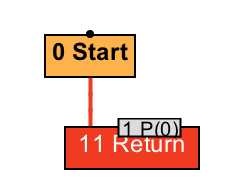

24 | 字段访问相关优化
在上一篇文章中，我介绍了逃逸分析，也介绍了基于逃逸分析的优化方式锁消除、栈上分配以及标量替换等内容。
其中的标量替换，可以看成将对象本身拆散为一个个字段，并把原本对对象字段的访问，替换为对一个个局部变量的访问。
class Foo {
int a = 0;
}
static int bar(int x) {
Foo foo = new Foo();
foo.a = x;
return foo.a;
}
举个例子，上面这段代码中的bar方法，经过逃逸分析以及标量替换后，其优化结果如下所示。（确切地说，是指所生成的 IR 图与下述代码所生成的 IR 图类似。之后不再重复解释。）
static int bar(int x) {
int a = x;
return a;
}
由于 Sea-of-Nodes IR 的特性，局部变量不复存在，取而代之的是一个个值。在例子对应的 IR 图中，返回节点将直接返回所输入的参数。

经过标量替换的bar方法
下面我列举了bar方法经由 C2 即时编译生成的机器码（这里略去了指令地址的前 48 位）。
# {method} 'bar' '(I)I' in 'FieldAccessTest'
# parm0: rsi = int // 参数 x
# [sp+0x20] (sp of caller)
0x06a0: sub rsp,0x18 // 创建方法栈桢
0x06a7: mov QWORD PTR [rsp+0x10],rbp // 无关指令
0x06ac: mov eax,esi // 将参数 x 存入返回值 eax 中
0x06ae: add rsp,0x10 // 弹出方法栈桢
0x06b2: pop rbp // 无关指令
0x06b3: mov r10,QWORD PTR [r15+0x70] // 安全点测试
0x06b7: test DWORD PTR [r10],eax // 安全点测试
0x06ba: ret
在 X86_64 的机器码中，每当使用 call 指令进入目标方法的方法体中时，我们需要在栈上为当前方法分配一块内存作为其栈桢。而在退出该方法时，我们需要弹出当前方法所使用的栈桢。
由于寄存器 rsp 维护着当前线程的栈顶指针，因此这些操作都是通过增减寄存器 rsp 来实现的，即上面这段机器码中偏移量为 0x06a0 以及 0x06ae 的指令。
在介绍安全点（safepoint）时我曾介绍过，HotSpot 虚拟机的即时编译器将在方法返回时插入安全点测试指令，即图中偏移量为 0x06b3 以及 0x06ba 的指令。其中真正的安全点测试是 0x06b7 指令。
如果虚拟机需要所有线程都到达安全点，那么该 test 指令所访问的内存地址所在的页将被标记为不可访问，而该指令也将触发 segfault，并借由 segfault 处理器进入安全点之中。通常，该指令会附带
; {poll_return}这样子的注释，这里被我略去了。在 X8_64 中，前几个传入参数会被放置于寄存器中，而返回值则需要存放在 rax 寄存器中。有时候你会看到返回值被存入 eax 寄存器中，这其实是同一个寄存器，只不过 rax 表示 64 位寄存器，而 eax 表示 32 位寄存器。具体可以参考 x86 calling conventions[1]。
当忽略掉创建、弹出方法栈桢，安全点测试以及其他无关指令之后，所剩下的方法体就只剩下偏移量为 0x06ac 的 mov 指令，以及 0x06ba 的 ret 指令。前者将所传入的 int 型参数 x 移至代表返回值的 eax 寄存器中，后者是退出当前方法并返回至调用者中。
虽然在部分情况下，逃逸分析以及基于逃逸分析的优化已经十分高效了，能够将代码优化到极其简单的地步，但是逃逸分析毕竟不是 Java 虚拟机的银色子弹。
在现实中，Java 程序中的对象或许本身便是逃逸的，或许因为方法内联不够彻底而被即时编译器当成是逃逸的。这两种情况都将导致即时编译器无法进行标量替换。这时候，针对对象字段访问的优化也变得格外重要起来。
static int bar(Foo o, int x) {
o.a = x;
return o.a;
}
在上面这段代码中，对象o是传入参数，不属于逃逸分析的范围（Java 虚拟机中的逃逸分析针对的是新建对象）。该方法会将所传入的 int 型参数x的值存储至实例字段Foo.a中，然后再读取并返回同一字段的值。
这段代码将涉及两次内存访问操作：存储以及读取实例字段Foo.a。我们可以轻易地将其手工优化为直接读取并返回传入参数 x 的值。由于这段代码较为简单，因此它极大可能被编译为寄存器之间的移动指令（即将输入参数x的值移至寄存器 eax 中）。这与原本的内存访问指令相比，显然要高效得多。
static int bar(Foo o, int x) {
o.a = x;
return x;
}
那么即时编译器是否能够作出类似的自动优化呢？
字段读取优化
答案是可以的。即时编译器会优化实例字段以及静态字段访问，以减少总的内存访问数目。具体来说，它将沿着控制流，缓存各个字段存储节点将要存储的值，或者字段读取节点所得到的值。
当即时编译器遇到对同一字段的读取节点时，如果缓存值还没有失效，那么它会将读取节点替换为该缓存值。
当即时编译器遇到对同一字段的存储节点时，它会更新所缓存的值。当即时编译器遇到可能更新字段的节点时，如方法调用节点（在即时编译器看来，方法调用会执行未知代码），或者内存屏障节点（其他线程可能异步更新了字段），那么它会采取保守的策略，舍弃所有缓存值。
在前面的例子中，我们见识了缓存字段存储节点的情况。下面我们来看一下缓存字段读取节点的情况。
static int bar(Foo o, int x) {
int y = o.a + x;
return o.a + y;
}
在上面这段代码中，实例字段Foo.a将被读取两次。即时编译器会将第一次读取的值缓存起来，并且替换第二次字段读取操作，以节省一次内存访问。
static int bar(Foo o, int x) {
int t = o.a;
int y = t + x;
return t + y;
}
如果字段读取节点被替换成一个常量，那么它将进一步触发更多优化。
static int bar(Foo o, int x) {
o.a = 1;
if (o.a >= 0)
return x;
else
return -x;
}
例如在上面这段代码中，实例字段Foo.a会被赋值为 1。接下来的 if 语句将判断同一实例字段是否不小于 0。经过字段读取优化之后，>=节点的两个输入参数分别为常数 1 和 0，因此可以直接替换为具体结果true。如此一来，else 分支将变成不可达代码，可以直接删除，其优化结果如下所示。
static int bar(Foo o, int x) {
o.a = 1;
return x;
}
我们再来看另一个例子。下面这段代码的bar方法中，实例字段a会被赋值为true，后面紧跟着一个以a为条件的 while 循环。
class Foo {
boolean a;
void bar() {
a = true;
while (a) {}
}
void whatever() { a = false; }
}
同样，即时编译器会将 while 循环中读取实例字段a的操作直接替换为常量true，即下面代码所示的死循环。
void bar() {
a = true;
while (true) {}
}
// 生成的机器码将陷入这一死循环中
0x066b: mov r11,QWORD PTR [r15+0x70] // 安全点测试
0x066f: test DWORD PTR [r11],eax // 安全点测试
0x0672: jmp 0x066b // while (true)
在介绍 Java 内存模型时，我们便知道可以通过 volatile 关键字标记实例字段a，以此强制对它的读取。
实际上，即时编译器将在 volatile 字段访问前后插入内存屏障节点。这些内存屏障节点会阻止即时编译器将屏障之前所缓存的值用于屏障之后的读取节点之上。
就我们的例子而言，尽管在 X86_64 平台上，volatile 字段读取操作前后的内存屏障是 no-op，在即时编译过程中的屏障节点，还是会阻止即时编译器的字段读取优化，强制在循环中使用内存读取指令访问实例字段Foo.a的最新值。
0x00e0: movzx r11d,BYTE PTR [rbx+0xc] // 读取 a
0x00e5: mov r10,QWORD PTR [r15+0x70] // 安全点测试
0x00e9: test DWORD PTR [r10],eax // 安全点测试
0x00ec: test r11d,r11d // while (a)
0x00ef: jne 0x00e0 // while (a)
同理，加锁、解锁操作也同样会阻止即时编译器的字段读取优化。
字段存储优化
除了字段读取优化之外，即时编译器还将消除冗余的存储节点。如果一个字段先后被存储了两次，而且这两次存储之间没有对第一次存储内容的读取，那么即时编译器可以将第一个字段存储给消除掉。
class Foo {
int a = 0;
void bar() {
a = 1;
a = 2;
}
}
举例来说，上面这段代码中的bar方法先后存储了两次Foo.a实例字段。由于第一次存储之后没有读取Foo.a的值，因此，即时编译器会将其看成冗余存储，并将之消除掉，生成如下代码：
void bar() {
a = 2;
}
实际上，即便是在这两个字段存储操作之间读取该字段，即时编译器还是有可能在字段读取优化的帮助下，将第一个存储操作当成冗余存储给消除掉。
class Foo {
int a = 0;
void bar() {
a = 1;
int t = a;
a = t + 2;
}
}
// 优化为
class Foo {
int a = 0;
void bar() {
a = 1;
int t = 1;
a = t + 2;
}
}
// 进一步优化为
class Foo {
int a = 0;
void bar() {
a = 3;
}
}
当然，如果所存储的字段被标记为 volatile，那么即时编译器也不能将冗余的存储操作消除掉。
这种情况看似很蠢，但实际上并不少见，比如说两个存储之间隔着许多其他代码，或者因为方法内联的缘故，将两个存储操作（如构造器中字段的初始化以及随后的更新）纳入同一个编译单元里。
死代码消除
除了字段存储优化之外，局部变量的死存储（dead store）同样也涉及了冗余存储。这是死代码消除（dead code eliminiation）的一种。不过，由于 Sea-of-Nodes IR 的特性，死存储的优化无须额外代价。
int bar(int x, int y) {
int t = x*y;
t = x+y;
return t;
}
上面这段代码涉及两个存储局部变量操作。当即时编译器将其转换为 Sea-of-Nodes IR 之后，没有节点依赖于 t 的第一个值x*y。因此，该乘法运算将被消除，其结果如下所示：
int bar(int x, int y) {
return x+y;
}
死存储还有一种变体，即在部分程序路径上有冗余存储。
int bar(boolean f, int x, int y) {
int t = x*y;
if (f)
t = x+y;
return t;
}
举个例子，上面这段代码中，如果所传入的 boolean 类型的参数f是true，那么在程序执行路径上将先后进行两次对局部变量t的存储。
同样，经过 Sea-of-Nodes IR 转换之后，返回节点所依赖的值是一个 phi 节点，将根据程序路径选择x+y或者x*y。也就是说，当f为true的程序路径上的乘法运算会被消除，其结果如下所示：
int bar(boolean f, int x, int y) {
int t;
if (f)
t = x+y;
else
t = x*y;
return t;
}
另一种死代码消除则是不可达分支消除。不可达分支就是任何程序路径都不可到达的分支，我们之前已经多次接触过了。
在即时编译过程中，我们经常因为方法内联、常量传播以及基于 profile 的优化等，生成许多不可达分支。通过消除不可达分支，即时编译器可以精简数据流，并且减少编译时间以及最终生成机器码的大小。
int bar(int x) {
if (false)
return x;
else
return -x;
}
举个例子，在上面的代码中，if 语句将一直跳转至 else 分支之中。因此，另一不可达分支可以直接消除掉，形成下面的代码：
int bar(int x) {
return -x;
}
总结与实践
今天我介绍了即时编译器关于字段访问的优化方式，以及死代码消除。
即时编译器将沿着控制流缓存字段存储、读取的值，并在接下来的字段读取操作时直接使用该缓存值。
这要求生成缓存值的访问以及使用缓存值的读取之间没有方法调用、内存屏障，或者其他可能存储该字段的节点。
即时编译器还会优化冗余的字段存储操作。如果一个字段的两次存储之间没有对该字段的读取操作、方法调用以及内存屏障，那么即时编译器可以将第一个冗余的存储操作给消除掉。
此外，我还介绍了死代码消除的两种形式。第一种是局部变量的死存储消除以及部分死存储消除。它们可以通过转换为 Sea-of-Nodes IR 来完成。第二种则是不可达分支。通过消除不可达分支，即时编译器可以精简数据流，并且减少编译时间以及最终生成机器码的大小。
今天的实践环节，请思考即时编译器会怎么优化下面代码中的除法操作？
int bar(int x, int y) {
int t = x/y;
t = x+y;
return t;
}
[1] https://en.wikipedia.org/wiki/X86_calling_conventions#System_V_AMD64_ABI